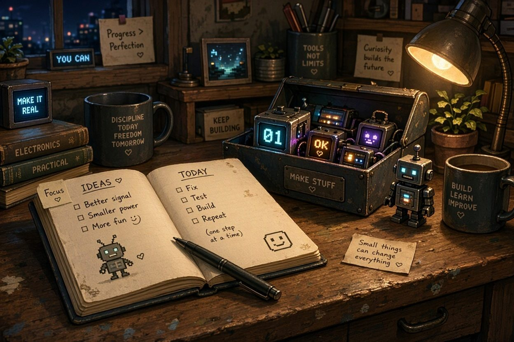

‹ Shelf
Journal & Utilities
Notes on making things
Entry
Replace with your latest title
Entry
Replace with the one before
Entry
And the one before that
All
Read the full journal
The tool drawer
First free utility: name and one line on what it does
FREE
Next utility goes here
FREE
Open slot for the next one
SOON